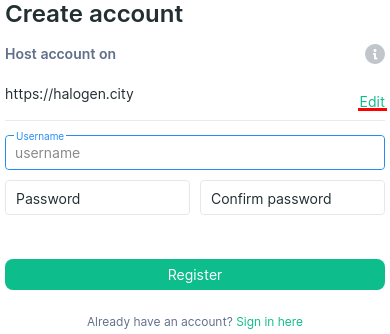

List of Matrix servers
Matrix is a FLOSS protocol for open federated instant messaging. Matrix ecosystem consists of many servers which can be used for registration. This is a list of Matrix servers for people who ask what server to choose to register on.
To use Matrix, install a client first. One of the most popular clients is Element.
If you are new to Matrix, read Matrix quickstart guide.
Note: Due to privacy concerns I no longer use Matrix. If you need a private means of communication, please look elsewhere.
Matrix.org users
If you already have an account hosted on Matrix.org, please deactivate your account and create a new account on another homeserver immediately. Matrix.org is the largest Matrix homeserver, and most Matrix apps suggest it by default. Many users new to Matrix end up using this server because they don't know that other servers exist. Unfortunately, Matrix.org is far from the best choice. Due to its absurdly strict rules, the server is known for frequent bans of rooms and user accounts, and it does so without prior notice. Basically, Matrix.org uses its size and special status to impose censorship.
Luckily, changing Matrix homeservers is as easy as switching Email providers. Below I have a list of servers with less strict terms of service.

Click "Edit".
How to choose
Choose a server that doesn't engage in chaotic account or room purges. Being on such a homeserver is no different from being on Discord. If a homeserver has rules, read them to check if they're unreasonably strict. Keep an eye on the usual things that tend to stink. For example, if a homeserver is trying to suppress certain political opinions, restrict you from posting certain types of content or otherwise impose authoritarian environment.
Recommendations
Ideally you would host your own homeserver on your own hardware, but not everyone can do that. This section contains homeservers hand-picked by me and trusted third-parties. With a 🏆 I marked servers that have received a trophy of recognition from the Matrix HQ team.
Not all the servers may be open for registration at any point of time. You may need to Email an admin to get an account.
| Server | Web client | Extra |
|---|---|---|
xmr.se |
||
nitro.chat |
nitro.chat | |
midov.pl |
midov.pl | Register here 🏆 |
w33b.cloud |
element.w33b.cloud | |
matrix.thisisjoes.site |
thisisjoes.site | |
eientei.org |
matrix.eientei.org | |
matrix.im |
||
sibnsk.net |
element | |
matrix.unredacted.org |
element | last checked - closed |
Servers run by Japanese people
| Server | Web client | Extra |
|---|---|---|
matrix.fedibird.com |
fedibird.com | 🏆 last checked - closed |
matrix.juggler.jp |
juggler.jp |
Other servers
Sorted list
I have a sorted list that updates automatically every 12 hours here.
Selection criteria.
- Open registration
- Domain length
- Up-to-date version of Synapse
The list is good for fetching new and updated servers, but there are no guarantees that the results are good.
Servers that support links to rooms
A separate list for servers that can be used to link rooms.
This is very useful if you want to share a room with someone
but don't want to use element.io or matrix.to because they are behind cloudflare
or because your room can't be reached via matrix.to.
To link a room append #/room/#your_room:example.com
to the instance's Element address,
like this: https://c.wfr.moe/#/room/#djtspace.midov.pl.